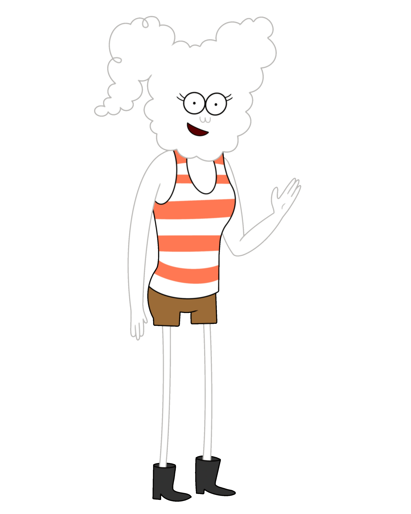

Personaggi Principali
CJ
CJ, il cui nome completo è Cloudy Jay, è una nuvola antropomorfa ed è l'interesse amoroso di Mordecai dopo la sua separazione da Margaret. È vivace, indipendente e sicura di sé, ma alla fine lei e Mordecai si separano.
CJ
CJ, il cui nome completo è Cloudy Jay, è una nuvola antropomorfa ed è l'interesse amoroso di Mordecai dopo la sua separazione da Margaret. È vivace, indipendente e sicura di sé, ma alla fine lei e Mordecai si separano.